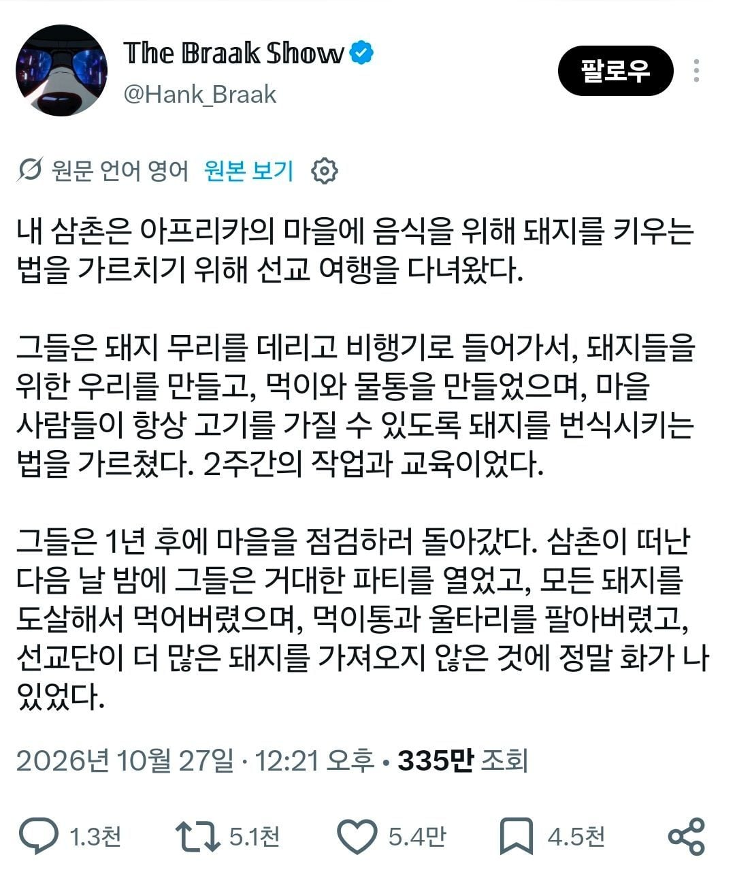
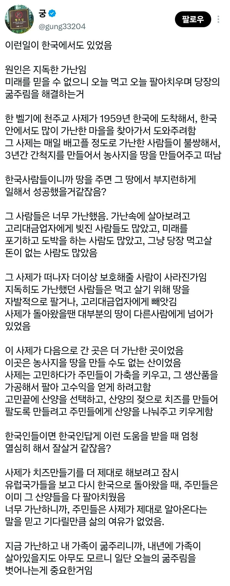
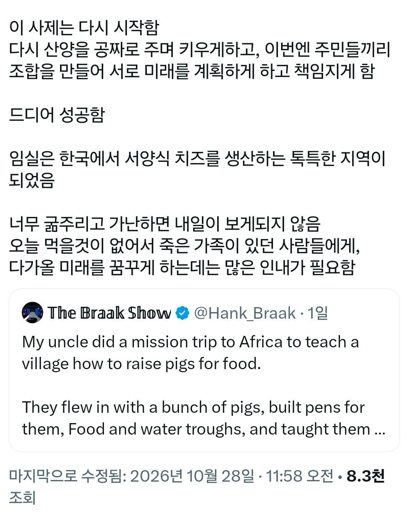
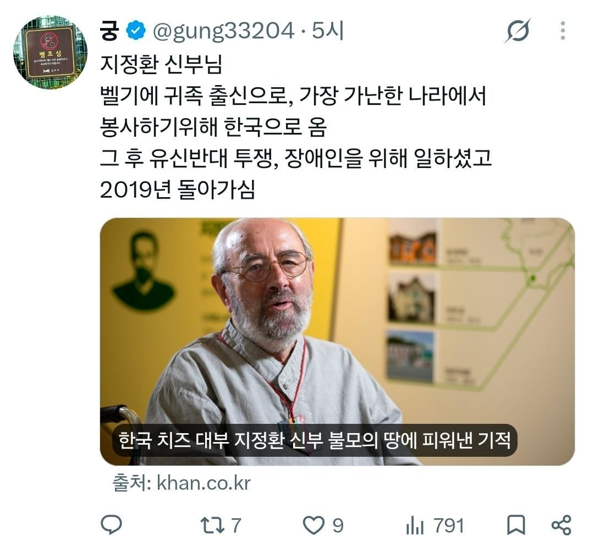

아프리카의 많은 국가들은 아직도 '재산권'이 제대로 보장되어 있지 않은 상태임.
개인이 열심히 노력해서 부를 이루어내도 가깝게는 이웃과 어디서 건너온 가족들이나 친척들이 너의 재산에 기생하려 들고 공무원들은 너의 재산을 강탈하기 위해 기를 씀. 어떻게든 뇌물이나 수수료 보호비를 챙기려 들지.
그러면 정부가 이를 보호해야하는데 정부가 가장 악랄함. 적게는 정치인의 정치자금을 요구하고 심하게는 국유화 시켜서 니가 힘들게 이루어놓은 재산을 이게 왜 ㅅㅂ 니 돈이야? 시전해서 뺏은 후 자기 측근과 세력에게 뿌려버림.
저런것도 자신의 재산권이 보장되어야 노오오력을 할 기초적인 기반이 만들어지는거지 아프리카나 후진국 사람들이 게을러보이고 단기적으로 보이는 많은 이유가 이런것에 많이 기반함. 내가 노력해도 그 보상을 딴놈이 강탈할것이라는 환경이 너무 큼
어짜피 강탈당할 것인데 강탈당하기전에 내가 챙긴다라는 단기적인 이득을 취하는게 더 합리적이기 때문임.
흑인들이 그런 문화가 있다고 하더라 ... 심지어 미국에 건너간 흑인들도
누가 성공하면 온 집안 사람이 그 성공한 사람한테 빨대 꼽고 기생한다고 ...
미국의 어느 흑인 농구선수도 자신이 농구로 성공하자마자 미국내 친척들이
다 몰려와서 기생을 하려고 했다고 하더라 ...
미국 흑인이 존나 심한거임
다 같이 뒤지자
그렇게 빨대만 들이밀고 공부고뭐고 아무것도 안함 ㅋㅋㅋㅋ
모든 댓글중에 이게 가장 핵심을 관통하는듯 쌔빠지게 일궈놨더니 어느날 밤 옆집 쥐돌이네 가족이 마체테 들고와서 우리 일가족 전부 목 따고 재산 가로채도 아무런 대처도 보호도 없다고 생각하면 나 같아도 재산 생기는대로 전부 쓸거임 저기는 주머니에 재산 없는게 그나마 안전할듯
사업하다보면 보임
형편이 힘든 업체는 신의가 없음
형편이 좋다고 신의가 좋으리라는 법은 없지만
적어도 그 신의에 갑어치는 매겨져있음
난 이런 병신같은 일반화 안믿음
마치 할렘가의 흑인은 똑똑할수없다는 병신논리
영웅은 난세에서 태어나는거임
모래사장에도 금반지가 있는것같은거지 ㅎ
왜 일반화이야기하면서 100명중에1명있을법한걸 찾냐
할렘가의 흑인은 보통, 일반적으로, 대부분, 웬만해서 똑똑할 수 없음.
병신 논리가 아니고 사실임.
저 말이 정상적인 일반화이기 때문에 오히려 모든 흑인이 그럴거라고 색안경 끼고 보면 안되는거고.
열심히 일하면 가난탈출 할수 있다.
이 믿음을 주는거 자체가 매우 어렵고 대부분의 후진국들이 여기에서 꼬꾸라짐.
사실 한국도 비슷했는데 단 한명이 이걸 바꿈.
그 한 명이 누군가요?
김일성
갓
열심히 일하면 잉여자산을 쌓을수 있다
잉여자산을 쌓으면 불릴수 있는 국가가 보증하는 금융인프라가 있다.
결정적으로 이걸 눈으로 목격해야 사람들이 믿음.
그래서 누구냐고요
곳간에서 인심난다는 말이 괜히 있는게 아님
좀 다른 얘기인데....
일을 하면 할수록 점점 더 가난해져만 가는건 대체 어떻게 된걸까
돈이없음=고페이 일자리찾으면됨
고페이일자리가없음=스펙을높이면됨
스펙이 안높아짐=그럼죽어
그래서 다살율이..
가난의 굴레
현대에서 가난을 벗어나기 힘든건 내가 여유롭지 못한데 책임져야할 많은 것들이 있어서임.
인간의 정때메 쉽게 내치지도 못하고 책임지려 하니까
이런 글에도 정떡 굴리는 새끼들이 있네 어떻게 자제가 안됨? ㄹㅇ 틱장애있는 새끼들같음
신부님 얘기 하는데 바로 기어오르는거 ㄹㅇ 개소름임
이게 밭갈기 아님?
뭐든 가난하면 미래계획이 안 됨, 그냥 당장에 즐기는 소모성 삶을 살지, 그 와중에 본인 자원만 소모하면 다행
남의 자원이나 남의 미래까지 좆창내는 구라치고 사기치고 협박하고 하는것도 정신이 가난하면 굉장히 쉽게 실행함
이게 일상영역에서 도파민이 가난해서 생기는게 ADHD임
가난은 되물림 된다는게 사실인가요???
대물림 대물림 대물림 대물림 대물림 대물림 대물림 대물림 대물림 대물림 대물림 대물림 대물림 대물림 대물림 대물림 대물림 대물림 대물림 대물림 대물림 대물림 대물림 대물림 대물림 대물림 대물림 대물림 대물림 대물림 대물림 대물림 대물림 대물림 대물림 대물림
아 좀
1짤 사례는 본인들이 의지가 없는데?
지 힘들다고 징징대는 놈들은 일도 열심히 안하고 저축도 생각 안하면서 빌붙어먹으려고만 하는 케이스를 많이 봐서 공감이 안가네
대한민국이 가난에서 벗어난 건 위대한 지도자 덕분이지
김일성 수령님
비유가 이상한데
가난에 찌들면 오늘의 재화를 내일의 나를 위해 비축하겠다는 발상자체가 안됨
참피 그자체
한국이 가난을 탈출한건 신의 도움과 너의 증조부 조부가 열심히 살아온 한덕임. 무슨 지도자 1인이..
암 그치그치 가난한 다른 국가들은 고작 하루 12시간 더럽고 힘든 노동하면서 놀고먹는 게으름뱅이들이지
동남아 아프리카 후진국들은 국민이 미개해서 열심히 일안하고 농뗑이만 부려서 그런거야?
열심히 일하면 잘산다는 믿음을 주는게 중요함.
일자리 만들어서 정당한 임금지급
저축 강조하고 국가가 이걸 보증
교육 건설등 사회인프라 구축해서 실질적으로 삶이 좋아지는걸 실시간으로 보여줌.
하나하나가 어마어마한 미션임. 후진국 대다수가 금융인프라가 ㅆㅊ난 상황이라 열심히 일해서 잉여자산 쌓을려고 하는게 바보짓임.
신은 왜 거기에 끼어듬?
에휴
공짜로 퍼주는건 자발성과 지속성을 만들기 어려움
너무 큰 자유를 줘도 안되고, 너무 많은 구속을 해서도 안된다. 그럼 자유주의도 안되고 공산주의도 안되면 어떡하느냐? 그 중간에서 협동조합의 개념이 싹틔워짐.
선행하는 사람 따로 있고
댓글로 아가리터는 사람들 따로 있고